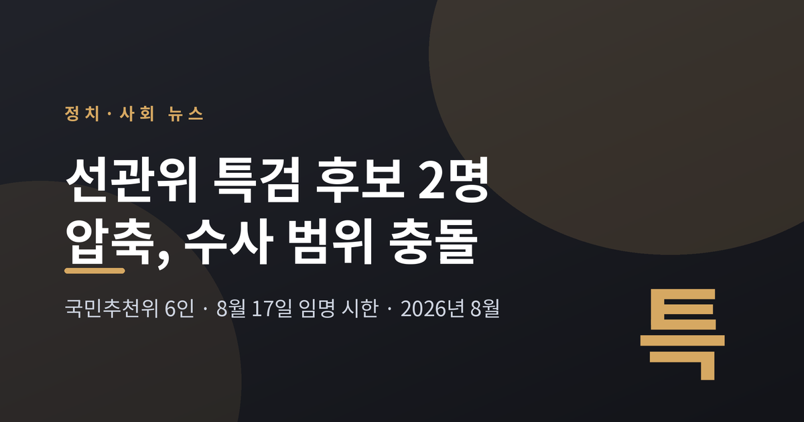
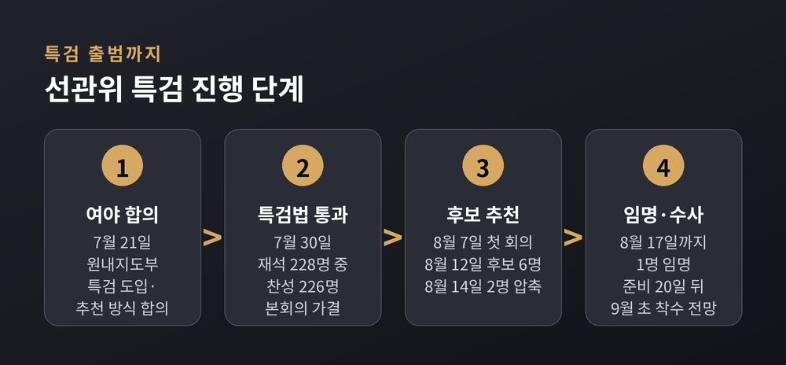
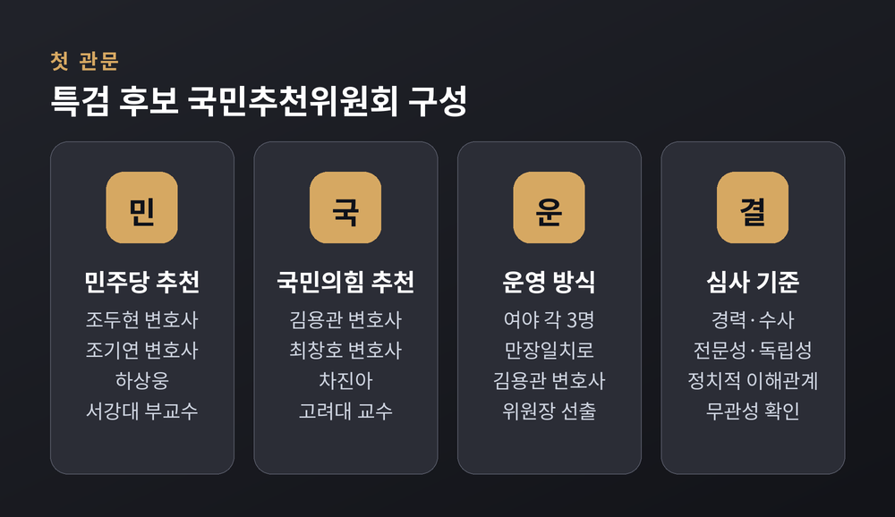
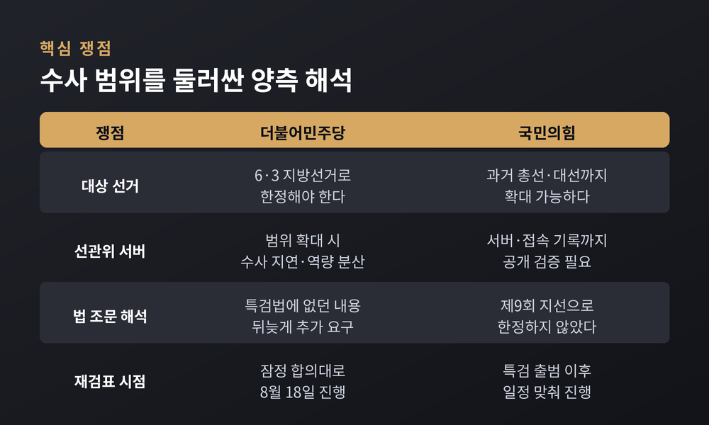
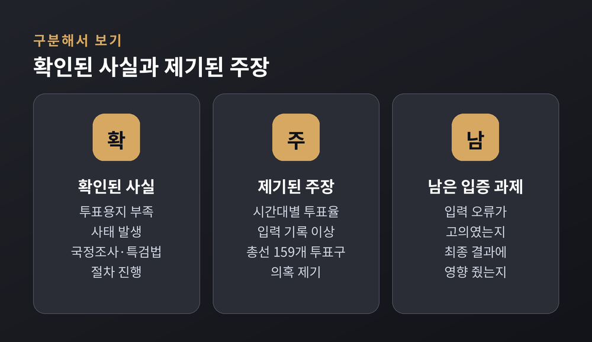
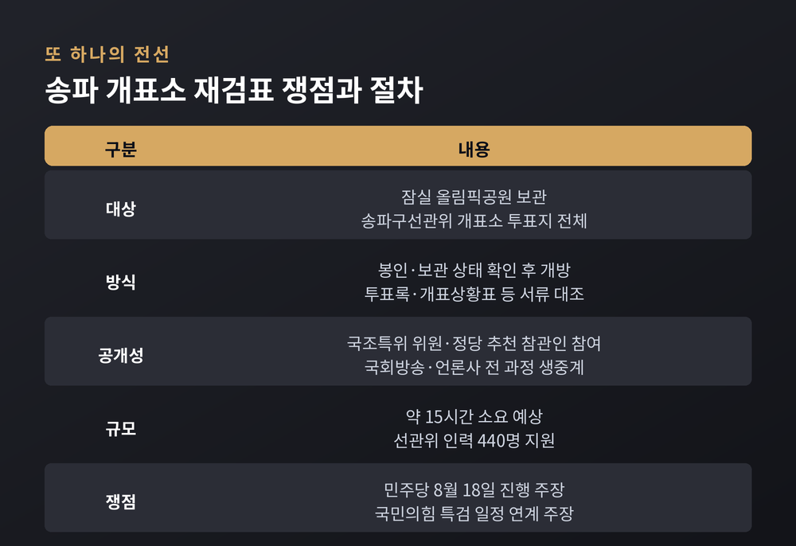

이번 글에서는 선관위 특검이 출범을 앞두고 어디까지 왔는지, 그리고 여야가 무엇을 두고 맞서고 있는지를 정리해 보겠습니다. 사실과 의혹이 뒤섞이기 쉬운 사안이라, 확인된 절차와 제기된 주장을 나누어 적었습니다.
세 줄 요약
1. 8월 14일 국민추천위원회가 특검 후보를 이태한·이혁 두 사람으로 압축했고, 대통령은 8월 17일까지 한 명을 임명해야 합니다.
2. 최대 쟁점은 수사 범위입니다. 민주당은 6·3 지방선거로 한정하자는 쪽, 국민의힘은 과거 선거까지 넓힐 수 있다는 쪽입니다.
3. 송파구 개표소 재검표 일정과 파견검사 수사권 문제까지 얽히면서, 8월 임시국회 전체가 이 사안을 중심으로 돌아가고 있습니다.

선관위 특검 국민추천위원회가 8월 14일 국회에서 2차 회의를 열었습니다.
이 자리에서 위원들은 이태한 전 서울남부지검 형사4부장검사(사법연수원 23기)와 이혁 전 서울고검 검사(20기)를 특검 후보로 추천하기로 만장일치 의결했습니다.
이태한 전 검사는 울산지검과 수원지검, 서울남부지검에서 부장검사를 지냈고 현재 법무법인 동인에서 일하고 있습니다. 이혁 전 검사는 법무부 감찰담당관과 수원지검·인천지검 1차장검사를 거쳐 지금은 법무법인 리앤리 대표변호사를 맡고 있습니다. 두 사람 모두 검찰 재직 당시 이른바 특수통으로 분류됐고, 과거 고위공직자범죄수사처장 후보군에도 이름이 오른 적이 있습니다.
추천위는 명단을 이재명 대통령에게 전달한 뒤 활동을 마쳤습니다. 대통령은 추천서를 받은 날로부터 3일 이내, 그러니까 8월 17일까지 두 사람 가운데 한 명을 특검으로 임명해야 합니다.
임명 이후에도 곧바로 수사가 시작되지는 않습니다. 수사팀 구성과 사무실 마련에 최장 20일이 주어지기 때문입니다. 일정대로 흘러간다면 실제 수사 착수는 9월 초가 될 전망입니다.
출발점은 6월 3일 제9회 전국동시지방선거에서 벌어진 투표용지 부족 사태였습니다. 여러 투표소에서 용지가 모자라 유권자가 투표하지 못하는 일이 생겼습니다.
국정조사 요구서는 6월 11일 국회 본회의에 보고됐습니다. 이후 논의가 특검으로 옮겨붙었습니다.
7월 21일, 여야 원내지도부가 특검 도입과 후보 추천 방식에 합의했습니다. 다만 수사 대상과 범위, 특검 규모, 수사 기간은 그때 정하지 못하고 뒤로 미뤘습니다. 이 미뤄둔 숙제가 지금의 갈등으로 이어진 셈입니다.
7월 30일 선관위 특검법이 국회 본회의를 통과했습니다. 재석 228명 가운데 226명이 찬성했습니다. 반대는 개혁신당 이주영·이준석 의원 두 명뿐이었습니다.
특검팀 규모는 작지 않습니다. 특별검사 1명에 특별검사보 5명, 특별수사관 70명, 파견검사 20명, 파견공무원 70명입니다. 활동 기간은 준비기간 20일에 수사기간 90일, 여기에 30일씩 두 차례 연장을 더해 최장 170일입니다.

국민추천위원회는 민주당과 국민의힘이 각각 세 명씩 추천해 여섯 명으로 꾸려졌습니다.
민주당은 조두현 변호사, 조기연 변호사, 하상웅 서강대 정치외교학과 부교수를 추천했습니다. 국민의힘은 김용관 변호사, 최창호 변호사, 차진아 고려대 법학전문대학원 교수를 내세웠습니다.
첫 회의는 8월 7일 국회에서 비공개로 열렸습니다. 위원들은 만장일치로 김용관 변호사를 위원장으로 뽑았습니다.
언론이 이 여섯 명의 구성을 두고 '수사 범위를 가를 첫 관문'이라고 표현한 이유가 있습니다. 특검이 누가 되느냐에 따라 법 조문을 읽는 폭이 달라질 수 있다고 봤기 때문입니다.
8월 12일에는 대한변호사협회와 법학전문대학원협의회가 각각 세 명씩 모두 여섯 명의 후보를 추천했습니다. 여섯 명 전원이 검사 출신이라는 점을 두고 적절성 논란도 일었습니다. 추천위는 이 가운데 경력과 수사 전문성, 독립성을 심사했고, 정치적 이해관계와 무관하게 수사할 수 있는지를 주요 기준으로 삼았다고 밝혔습니다.

특검법이 정한 수사 대상은 크게 다섯 갈래입니다.
문제는 마지막 항목입니다. '인지 사건' 조항을 어디까지 넓힐 수 있느냐를 두고 두 당의 해석이 정면으로 갈립니다.
국민의힘은 특검법이 선거를 제9회 지방선거로 한정하지 않았다는 점을 근거로 듭니다. 장동혁 대표는 이번 총선과 대선, 필요하다면 그 이전 선거까지도 수사 대상에 포함할 수 있다는 취지로 말했습니다. 최수진 원내수석대변인은 "투표용지 부족 사태만으로는 부족하다"며 선관위 서버와 내부 비리까지 함께 규명해야 한다고 주장했습니다.
민주당은 정반대입니다. 수사를 6·3 지방선거의 관리 부실에 집중해야 한다는 입장입니다. 서버까지 대상을 넓히면 수사가 늘어지고 특검 역량도 흩어진다는 논리입니다. 전용기 원내소통수석부대표는 "본인들이 낸 특검법에도 없던 내용을 갑자기 들고 와 특검 출범을 늦추려 하고 있다"고 비판했습니다.
같은 조문을 놓고 한쪽은 문을 넓게, 다른 쪽은 좁게 읽습니다. 결국 이 해석을 정리하는 몫은 임명될 특검에게 넘어갑니다.

이 대목은 조심스럽게 짚겠습니다.
지금까지 확인된 것은 투표용지 부족 사태가 실제로 있었다는 사실, 그리고 시간대별 투표율 전산 입력 기록에서 이상한 패턴이 국회에서 제시됐다는 사실입니다.
주진우 국민의힘 의원은 8월 3일 기자회견에서 22대 총선 전국 159개 투표구에서 투표자 수와 투표율이 고의로 허위 입력된 정황이 있다고 주장했습니다. 서울 은평구 불광1동의 두 투표구에서 여섯 시간 동안 투표자 증가 수가 똑같이 나타났다며, 이런 사례가 전국 다섯 쌍 열 곳에서 발견됐다고 밝혔습니다. 유사 사례로 140곳을 더 제시했고, 21대 대선에서도 109개 투표구에서 비정상적 기록이 확인됐다고 했습니다.
다만 이는 현재까지 '제기된 주장'입니다. 언론들은 시간대별 입력 기록의 이상과 최종 개표 결과의 조작은 서로 다른 문제라고 지적합니다. 입력이 현장과 달랐는지는 확인할 수 있어도, 그것이 고의였는지와 당락에 영향을 줬는지는 별도로 입증해야 한다는 것입니다.
예전에는 이런 논쟁이 온라인 커뮤니티 안에 머물렀습니다. 지금은 국회 청문회장과 특검 수사 대상으로 올라와 있습니다. 그만큼 사실 관계를 가리는 절차가 중요해졌습니다.

8월 10일 국정조사특별위원회 3차 청문회는 시작부터 파행을 빚었습니다. 쟁점은 잠실 올림픽공원에 보관 중인 송파구선관위 개표소 투표지의 공개 재검표 일정이었습니다.
민주당은 잠정 합의대로 8월 18일에 진행하자고 요구했습니다. 윤건영 의원은 "국조를 한 달 연장한 이유는 재검표를 하기 위해서"라며 불확실성을 빨리 걷어내자고 말했습니다. 양부남 의원은 재검표 권한은 국조특위에 있다고 주장했습니다.
국민의힘은 재검표 자체를 거부하는 것이 아니라 특검과 일정을 맞추자는 입장입니다. 서범수 의원은 "곧 특검이 발족할 건데 그걸 못 기다려서 우리끼리 먼저 하는 게 맞느냐"고 반문했습니다. 주진우 의원은 증거 오염 가능성을 문제 삼으며 선관위 서버의 공개 검증을 함께 요구했습니다.
윤상현 위원장은 공방이 이어지자 간사 협의를 요청하고 정회했습니다.
재검표 방식 자체는 이미 합의돼 있습니다. 국조특위 위원과 정당 추천 참관인이 참여하고, 전 과정을 국회방송과 언론사가 생중계합니다. 봉인 상태를 먼저 확인한 뒤 상자를 열고, 투표록과 개표상황표 같은 서류까지 함께 대조합니다. 실제 투표지 매수와 개표상황표상 계수가 맞는지도 확인합니다. 준비부터 재봉인과 이송까지 약 15시간이 걸릴 것으로 예상되며, 선관위 인력 440명이 지원합니다.

법률적으로 껄끄러운 대목이 하나 남아 있습니다.
수사와 기소를 분리하는 형사소송법 개정으로 10월부터는 검사가 직접 수사를 할 수 없게 됩니다. 그런데 선관위 특검법은 그 법이 통과되기 하루 전에 국회를 지났습니다.
특검은 검사를 최대 20명까지 파견받습니다. 특검법 부칙에 시행 당시 검사의 직무와 권한 규정을 적용한다는 예외가 있어, 파견검사는 직접 수사를 할 수 있습니다.
한정된 기간에 성과를 내려면 수사 지휘 경험이 필요하다는 현실론이 배경으로 설명됩니다. 반면 뒷날 피고인 측이 이 지점을 문제 삼아 공소기각을 주장할 여지가 있다는 지적도 나옵니다. 개혁신당은 특검으로 수사권을 독점하는 구조라고 비판했습니다.
아직 답이 정리되지 않은 문제입니다.
이 사안은 홀로 떠 있지 않습니다.
8월 임시국회에서는 패스트트랙 심사 기간을 최장 330일에서 90일로 줄이는 국회법 개정안이 표결을 기다리고 있습니다. 상임위 심사는 180일에서 60일로, 법사위 체계·자구 심사는 90일에서 30일로 단축됩니다. 필리버스터 종결동의안 발의 요건도 재적의원 3분의 1에서 5분의 1로 완화됩니다.
국민의힘은 필리버스터로 맞섰지만 7월 임시국회 회기가 끝나면서 토론이 자동 종결됐습니다. 이제 표결만 남았습니다.
국정조사도 8월 말까지 한 달 연장된 상태입니다. 8월 28일 전체회의에서 결과보고서 채택과 증인 고발 문제를 다룰 예정입니다. 특검 출범, 재검표, 국회법 개정이 같은 달에 겹쳐 있는 구조입니다.
가까운 관전 포인트는 세 가지로 정리됩니다.
첫째, 8월 17일까지 이뤄질 특검 임명입니다. 누가 임명되든 첫 과제는 수사 범위를 어디까지 잡을지 스스로 정하는 일이 될 것입니다.
둘째, 송파 개표소 재검표의 시점과 방식입니다. 8월 18일이 유지될지, 특검 일정에 맞춰 조정될지가 남았습니다.
셋째, 수사 결과가 어떤 형태로 나오느냐입니다. 관리 부실로 정리되느냐, 그 이상이 확인되느냐에 따라 정치적 파장이 크게 달라집니다.
한계도 분명히 적어두겠습니다. 특검 수사는 이제 시작도 하지 않았습니다. 지금 오가는 말들은 대체로 예측이거나 요구이지, 결론이 아닙니다.
끝으로 한 마디만 더 드리겠습니다.
선거 관리의 신뢰는 결과를 바꾸는 데서 오지 않습니다. 절차를 끝까지 투명하게 보여주는 데서 옵니다.
"의혹은 덮어서 사라지지 않고, 결론을 앞질러서도 풀리지 않습니다."
이번 특검이 그 두 가지를 다 피해 갈 수 있겠냐고 물으신다면, 저는 아직 지켜보는 중이라고 답하겠습니다.